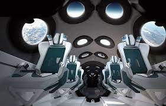

moya
nombre de place restant
Moteur à fusion nucléaire : deux atomes légers (principalement
l'hydrogène) fusionnent:
grâce à une amorce énergétique pour former des composés plus
lourds avec un dégagement d’énergie encore plus puissant.
On pense que ce serait le système le plus économique.
Son carburant, l’hydrogène, est abondant dans l’espace et donc
quasiment gratuit.
Pour en récolter une quantité suffisante, le vaisseau pourrait
avoir une forme d’entonnoir et un diamètre supérieur à 40 km.
